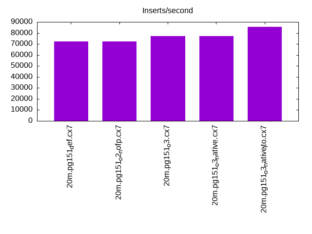
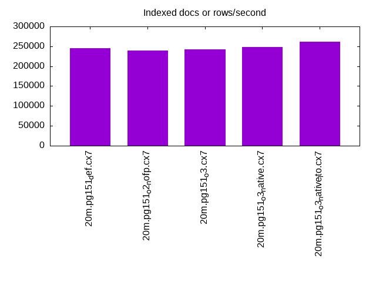
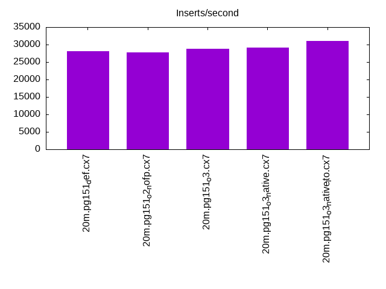
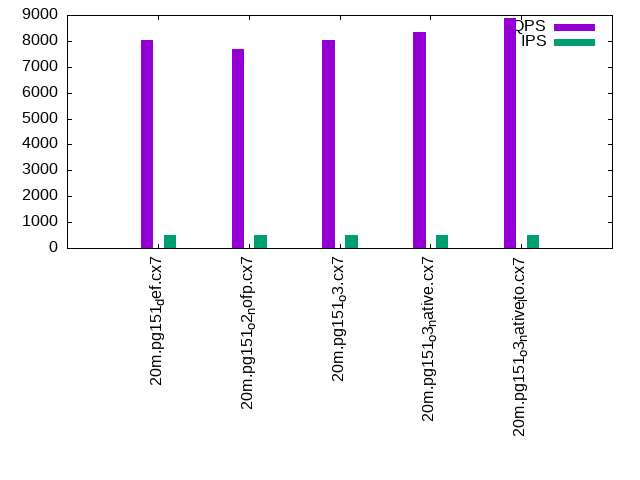
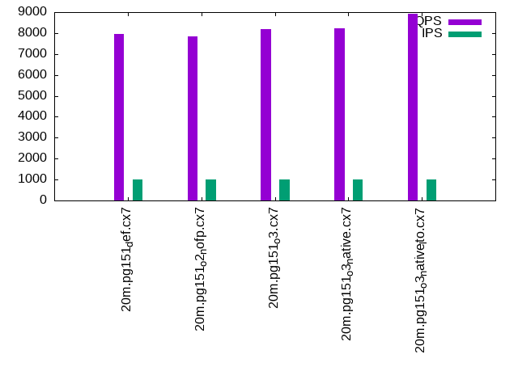

This is a report for the insert benchmark with 20M docs and 1 client(s). It is generated by scripts (bash, awk, sed) and Tufte might not be impressed. An overview of the insert benchmark is here and a short update is here. Below, by DBMS, I mean DBMS+version.config. An example is my8020.c10b40 where my means MySQL, 8020 is version 8.0.20 and c10b40 is the name for the configuration file.
The test server has 8 AMD cores, 16G RAM and an NVMe SSD. It is described here as the Beelink. The benchmark was run with 1 client and there were 1 or 2 connections per client (1 for queries, 1 for inserts). It uses 1 table. It loads 20M rows without secondary indexes, creates secondary indexes, loads another 20M rows then does 3 read+write tests for one hour each that do queries as fast as possible with 100, 500 and then 1000 writes/second/client concurrent with the queries. The database is cached by the storage engine and the only IO is for writes. Clients and the DBMS share one server. The per-database configs are in the per-database subdirectories here.
The tested DBMS are:
The numbers are inserts/s for l.i0 and l.i1, indexed docs (or rows) /s for l.x and queries/s for q*.2. The values are the average rate over the entire test for inserts (IPS) and queries (QPS). The range of values for IPS and QPS is split into 3 parts: bottom 25%, middle 50%, top 25%. Values in the bottom 25% have a red background, values in the top 25% have a green background and values in the middle have no color. A gray background is used for values that can be ignored because the DBMS did not sustain the target insert rate. Red backgrounds are not used when the minimum value is within 80% of the max value.
| dbms | l.i0 | l.x | l.i1 | q100.1 | q500.1 | q1000.1 |
|---|---|---|---|---|---|---|
| 20m.pg151_def.cx7 | 72202 | 245122 | 28090 | 8140 | 8029 | 7972 |
| 20m.pg151_o2_nofp.cx7 | 72202 | 239286 | 27778 | 7885 | 7683 | 7845 |
| 20m.pg151_o3.cx7 | 77220 | 242169 | 28860 | 8126 | 8030 | 8200 |
| 20m.pg151_o3_native.cx7 | 77220 | 248148 | 29070 | 8110 | 8328 | 8217 |
| 20m.pg151_o3_native_lto.cx7 | 85470 | 261039 | 31056 | 8894 | 8880 | 8912 |
This table has relative throughput, throughput for the DBMS relative to the DBMS in the first line, using the absolute throughput from the previous table.
| dbms | l.i0 | l.x | l.i1 | q100.1 | q500.1 | q1000.1 |
|---|---|---|---|---|---|---|
| 20m.pg151_def.cx7 | 1.00 | 1.00 | 1.00 | 1.00 | 1.00 | 1.00 |
| 20m.pg151_o2_nofp.cx7 | 1.00 | 0.98 | 0.99 | 0.97 | 0.96 | 0.98 |
| 20m.pg151_o3.cx7 | 1.07 | 0.99 | 1.03 | 1.00 | 1.00 | 1.03 |
| 20m.pg151_o3_native.cx7 | 1.07 | 1.01 | 1.03 | 1.00 | 1.04 | 1.03 |
| 20m.pg151_o3_native_lto.cx7 | 1.18 | 1.06 | 1.11 | 1.09 | 1.11 | 1.12 |
This lists the average rate of inserts/s for the tests that do inserts concurrent with queries. For such tests the query rate is listed in the table above. The read+write tests are setup so that the insert rate should match the target rate every second. Cells that are not at least 95% of the target have a red background to indicate a failure to satisfy the target.
| dbms | q100.1 | q500.1 | q1000.1 |
|---|---|---|---|
| pg151_def.cx7 | 100 | 498 | 998 |
| pg151_o2_nofp.cx7 | 100 | 499 | 998 |
| pg151_o3.cx7 | 100 | 499 | 998 |
| pg151_o3_native.cx7 | 100 | 499 | 998 |
| pg151_o3_native_lto.cx7 | 100 | 499 | 997 |
| target | 100 | 500 | 1000 |
l.i0: load without secondary indexes. Graphs for performance per 1-second interval are here.
Average throughput:
Insert response time histogram: each cell has the percentage of responses that take <= the time in the header and max is the max response time in seconds. For the max column values in the top 25% of the range have a red background and in the bottom 25% of the range have a green background. The red background is not used when the min value is within 80% of the max value.
| dbms | 256us | 1ms | 4ms | 16ms | 64ms | 256ms | 1s | 4s | 16s | gt | max |
|---|---|---|---|---|---|---|---|---|---|---|---|
| pg151_def.cx7 | 99.999 | 0.001 | 0.004 | ||||||||
| pg151_o2_nofp.cx7 | 100.000 | 0.004 | |||||||||
| pg151_o3.cx7 | 99.999 | 0.001 | 0.005 | ||||||||
| pg151_o3_native.cx7 | 99.999 | 0.001 | 0.006 | ||||||||
| pg151_o3_native_lto.cx7 | 0.060 | 99.940 | 0.001 | 0.006 |
Performance metrics for the DBMS listed above. Some are normalized by throughput, others are not. Legend for results is here.
ips qps rps rmbps wps wmbps rpq rkbpq wpi wkbpi csps cpups cspq cpupq dbgb1 dbgb2 rss maxop p50 p99 tag 72202 0 0 0.0 83.8 30.5 0.000 0.000 0.001 0.432 8938 22.4 0.124 25 1.9 5.2 0.0 0.004 72518 68716 20m.pg151_def.cx7 72202 0 0 0.0 83.5 30.5 0.000 0.000 0.001 0.433 8948 22.3 0.124 25 1.9 5.2 0.0 0.004 72635 50638 20m.pg151_o2_nofp.cx7 77220 0 0 0.0 89.9 32.7 0.000 0.000 0.001 0.434 9470 22.3 0.123 23 1.9 5.2 0.0 0.005 77514 75014 20m.pg151_o3.cx7 77220 0 0 0.0 90.4 32.9 0.000 0.000 0.001 0.436 9496 22.3 0.123 23 1.9 5.2 0.0 0.006 77819 68528 20m.pg151_o3_native.cx7 85470 0 0 0.0 99.9 36.5 0.000 0.000 0.001 0.437 10360 22.7 0.121 21 1.9 5.2 0.0 0.006 86007 70817 20m.pg151_o3_native_lto.cx7
l.x: create secondary indexes.
Average throughput:
Performance metrics for the DBMS listed above. Some are normalized by throughput, others are not. Legend for results is here.
ips qps rps rmbps wps wmbps rpq rkbpq wpi wkbpi csps cpups cspq cpupq dbgb1 dbgb2 rss maxop p50 p99 tag 245122 0 0 0.0 137.2 56.6 0.000 0.000 0.001 0.237 773 12.5 0.003 4 3.7 8.6 0.0 0.004 NA NA 20m.pg151_def.cx7 239286 0 0 0.0 129.2 52.8 0.000 0.000 0.001 0.226 717 12.4 0.003 4 3.7 8.6 0.0 0.004 NA NA 20m.pg151_o2_nofp.cx7 242169 0 0 0.0 128.6 54.1 0.000 0.000 0.001 0.229 792 12.3 0.003 4 3.7 8.6 0.0 0.004 NA NA 20m.pg151_o3.cx7 248148 0 0 0.0 145.3 62.1 0.000 0.000 0.001 0.256 782 12.4 0.003 4 3.7 8.6 0.0 0.004 NA NA 20m.pg151_o3_native.cx7 261039 0 0 0.0 124.1 54.0 0.000 0.000 0.000 0.212 716 12.4 0.003 4 3.7 8.6 0.0 0.003 NA NA 20m.pg151_o3_native_lto.cx7
l.i1: continue load after secondary indexes created. Graphs for performance per 1-second interval are here.
Average throughput:
Insert response time histogram: each cell has the percentage of responses that take <= the time in the header and max is the max response time in seconds. For the max column values in the top 25% of the range have a red background and in the bottom 25% of the range have a green background. The red background is not used when the min value is within 80% of the max value.
| dbms | 256us | 1ms | 4ms | 16ms | 64ms | 256ms | 1s | 4s | 16s | gt | max |
|---|---|---|---|---|---|---|---|---|---|---|---|
| pg151_def.cx7 | 99.998 | 0.002 | 0.010 | ||||||||
| pg151_o2_nofp.cx7 | 99.995 | 0.005 | 0.009 | ||||||||
| pg151_o3.cx7 | 99.996 | 0.004 | 0.009 | ||||||||
| pg151_o3_native.cx7 | 99.995 | 0.005 | 0.008 | ||||||||
| pg151_o3_native_lto.cx7 | 99.995 | 0.005 | 0.009 |
Performance metrics for the DBMS listed above. Some are normalized by throughput, others are not. Legend for results is here.
ips qps rps rmbps wps wmbps rpq rkbpq wpi wkbpi csps cpups cspq cpupq dbgb1 dbgb2 rss maxop p50 p99 tag 28090 0 0 0.0 166.5 48.2 0.000 0.000 0.006 1.758 7158 17.8 0.255 51 8.2 18.6 0.0 0.010 28768 20526 20m.pg151_def.cx7 27778 0 0 0.0 166.0 47.5 0.000 0.000 0.006 1.750 7084 17.7 0.255 51 8.2 18.5 0.0 0.009 28418 20278 20m.pg151_o2_nofp.cx7 28860 0 0 0.0 168.5 48.8 0.000 0.000 0.006 1.731 7343 18.0 0.254 50 8.2 18.8 0.0 0.009 29430 20974 20m.pg151_o3.cx7 29070 0 0 0.0 170.1 49.5 0.000 0.000 0.006 1.745 7402 17.9 0.255 49 8.2 19.0 0.0 0.008 29790 20977 20m.pg151_o3_native.cx7 31056 0 0 0.0 176.5 52.7 0.000 0.000 0.006 1.738 7841 18.2 0.252 47 8.2 19.8 0.2 0.009 31815 21875 20m.pg151_o3_native_lto.cx7
q100.1: range queries with 100 insert/s per client. Graphs for performance per 1-second interval are here.
Average throughput:
Query response time histogram: each cell has the percentage of responses that take <= the time in the header and max is the max response time in seconds. For max values in the top 25% of the range have a red background and in the bottom 25% of the range have a green background. The red background is not used when the min value is within 80% of the max value.
| dbms | 256us | 1ms | 4ms | 16ms | 64ms | 256ms | 1s | 4s | 16s | gt | max |
|---|---|---|---|---|---|---|---|---|---|---|---|
| pg151_def.cx7 | 99.956 | 0.044 | nonzero | 0.003 | |||||||
| pg151_o2_nofp.cx7 | 99.931 | 0.069 | nonzero | 0.003 | |||||||
| pg151_o3.cx7 | 99.926 | 0.074 | nonzero | 0.003 | |||||||
| pg151_o3_native.cx7 | 99.940 | 0.060 | nonzero | nonzero | 0.004 | ||||||
| pg151_o3_native_lto.cx7 | 99.968 | 0.032 | nonzero | nonzero | 0.004 |
Insert response time histogram: each cell has the percentage of responses that take <= the time in the header and max is the max response time in seconds. For max values in the top 25% of the range have a red background and in the bottom 25% of the range have a green background. The red background is not used when the min value is within 80% of the max value.
| dbms | 256us | 1ms | 4ms | 16ms | 64ms | 256ms | 1s | 4s | 16s | gt | max |
|---|---|---|---|---|---|---|---|---|---|---|---|
| pg151_def.cx7 | 99.806 | 0.194 | 0.007 | ||||||||
| pg151_o2_nofp.cx7 | 99.778 | 0.222 | 0.007 | ||||||||
| pg151_o3.cx7 | 99.833 | 0.167 | 0.008 | ||||||||
| pg151_o3_native.cx7 | 99.889 | 0.111 | 0.008 | ||||||||
| pg151_o3_native_lto.cx7 | 99.889 | 0.111 | 0.008 |
Performance metrics for the DBMS listed above. Some are normalized by throughput, others are not. Legend for results is here.
ips qps rps rmbps wps wmbps rpq rkbpq wpi wkbpi csps cpups cspq cpupq dbgb1 dbgb2 rss maxop p50 p99 tag 100 8140 0 0.0 196.9 5.6 0.000 0.000 1.973 57.646 31244 12.8 3.838 126 8.2 17.1 0.0 0.003 7621 7448 20m.pg151_def.cx7 100 7885 0 0.0 194.7 5.6 0.000 0.000 1.953 57.734 30283 12.7 3.841 129 8.2 17.0 0.0 0.003 7514 7367 20m.pg151_o2_nofp.cx7 100 8126 0 0.0 194.0 5.5 0.000 0.000 1.946 56.125 31205 12.7 3.840 125 8.2 17.3 0.0 0.003 7766 7574 20m.pg151_o3.cx7 100 8110 0 0.0 193.9 5.5 0.000 0.000 1.946 57.002 31181 12.7 3.845 125 8.2 17.4 0.0 0.004 7846 7576 20m.pg151_o3_native.cx7 100 8894 0 0.0 181.3 5.4 0.000 0.000 1.818 55.269 34127 12.9 3.837 116 8.2 18.2 0.0 0.004 8568 8387 20m.pg151_o3_native_lto.cx7
q500.1: range queries with 500 insert/s per client. Graphs for performance per 1-second interval are here.
Average throughput:
Query response time histogram: each cell has the percentage of responses that take <= the time in the header and max is the max response time in seconds. For max values in the top 25% of the range have a red background and in the bottom 25% of the range have a green background. The red background is not used when the min value is within 80% of the max value.
| dbms | 256us | 1ms | 4ms | 16ms | 64ms | 256ms | 1s | 4s | 16s | gt | max |
|---|---|---|---|---|---|---|---|---|---|---|---|
| pg151_def.cx7 | 99.945 | 0.055 | nonzero | 0.003 | |||||||
| pg151_o2_nofp.cx7 | 99.930 | 0.069 | nonzero | nonzero | 0.004 | ||||||
| pg151_o3.cx7 | 99.952 | 0.048 | nonzero | 0.003 | |||||||
| pg151_o3_native.cx7 | 99.958 | 0.042 | nonzero | 0.003 | |||||||
| pg151_o3_native_lto.cx7 | 99.974 | 0.026 | nonzero | 0.003 |
Insert response time histogram: each cell has the percentage of responses that take <= the time in the header and max is the max response time in seconds. For max values in the top 25% of the range have a red background and in the bottom 25% of the range have a green background. The red background is not used when the min value is within 80% of the max value.
| dbms | 256us | 1ms | 4ms | 16ms | 64ms | 256ms | 1s | 4s | 16s | gt | max |
|---|---|---|---|---|---|---|---|---|---|---|---|
| pg151_def.cx7 | 99.833 | 0.167 | 0.007 | ||||||||
| pg151_o2_nofp.cx7 | 99.922 | 0.078 | 0.007 | ||||||||
| pg151_o3.cx7 | 99.894 | 0.106 | 0.009 | ||||||||
| pg151_o3_native.cx7 | 99.878 | 0.122 | 0.007 | ||||||||
| pg151_o3_native_lto.cx7 | 99.922 | 0.078 | 0.008 |
Performance metrics for the DBMS listed above. Some are normalized by throughput, others are not. Legend for results is here.
ips qps rps rmbps wps wmbps rpq rkbpq wpi wkbpi csps cpups cspq cpupq dbgb1 dbgb2 rss maxop p50 p99 tag 498 8029 0 0.0 331.1 11.5 0.000 0.000 0.664 23.659 30975 13.1 3.858 131 8.4 14.3 0.0 0.003 7672 7558 20m.pg151_def.cx7 499 7683 0 0.0 331.7 11.5 0.000 0.000 0.665 23.610 29637 13.0 3.858 135 8.4 14.3 0.0 0.004 7388 7255 20m.pg151_o2_nofp.cx7 499 8030 0 0.0 329.2 11.5 0.000 0.000 0.660 23.678 30963 12.9 3.856 129 8.4 14.4 0.0 0.003 7640 7431 20m.pg151_o3.cx7 499 8328 0 0.0 329.0 11.5 0.000 0.000 0.660 23.678 32111 12.8 3.856 123 8.4 14.4 0.0 0.003 7959 7735 20m.pg151_o3_native.cx7 499 8880 0 0.0 322.1 11.4 0.000 0.000 0.646 23.491 34209 13.1 3.852 118 8.4 14.6 0.0 0.003 8544 8388 20m.pg151_o3_native_lto.cx7
q1000.1: range queries with 1000 insert/s per client. Graphs for performance per 1-second interval are here.
Average throughput:
Query response time histogram: each cell has the percentage of responses that take <= the time in the header and max is the max response time in seconds. For max values in the top 25% of the range have a red background and in the bottom 25% of the range have a green background. The red background is not used when the min value is within 80% of the max value.
| dbms | 256us | 1ms | 4ms | 16ms | 64ms | 256ms | 1s | 4s | 16s | gt | max |
|---|---|---|---|---|---|---|---|---|---|---|---|
| pg151_def.cx7 | 99.954 | 0.046 | nonzero | 0.003 | |||||||
| pg151_o2_nofp.cx7 | 99.938 | 0.062 | nonzero | 0.003 | |||||||
| pg151_o3.cx7 | 99.950 | 0.050 | nonzero | 0.003 | |||||||
| pg151_o3_native.cx7 | 99.953 | 0.047 | nonzero | nonzero | 0.005 | ||||||
| pg151_o3_native_lto.cx7 | 99.978 | 0.022 | nonzero | 0.003 |
Insert response time histogram: each cell has the percentage of responses that take <= the time in the header and max is the max response time in seconds. For max values in the top 25% of the range have a red background and in the bottom 25% of the range have a green background. The red background is not used when the min value is within 80% of the max value.
| dbms | 256us | 1ms | 4ms | 16ms | 64ms | 256ms | 1s | 4s | 16s | gt | max |
|---|---|---|---|---|---|---|---|---|---|---|---|
| pg151_def.cx7 | 99.939 | 0.061 | 0.008 | ||||||||
| pg151_o2_nofp.cx7 | 99.889 | 0.111 | 0.007 | ||||||||
| pg151_o3.cx7 | 99.933 | 0.067 | 0.009 | ||||||||
| pg151_o3_native.cx7 | 99.919 | 0.081 | 0.008 | ||||||||
| pg151_o3_native_lto.cx7 | 99.928 | 0.072 | 0.008 |
Performance metrics for the DBMS listed above. Some are normalized by throughput, others are not. Legend for results is here.
ips qps rps rmbps wps wmbps rpq rkbpq wpi wkbpi csps cpups cspq cpupq dbgb1 dbgb2 rss maxop p50 p99 tag 998 7972 0 0.0 325.8 16.3 0.000 0.000 0.327 16.682 30870 13.6 3.872 136 9.0 14.4 0.0 0.003 7693 7543 20m.pg151_def.cx7 998 7845 0 0.0 326.8 16.2 0.000 0.000 0.328 16.671 30393 13.9 3.874 142 9.0 14.4 0.0 0.003 7493 7321 20m.pg151_o2_nofp.cx7 998 8200 0 0.0 323.8 16.3 0.000 0.000 0.325 16.740 31730 13.8 3.869 135 9.0 14.4 0.0 0.003 7769 7607 20m.pg151_o3.cx7 998 8217 0 0.0 324.8 16.3 0.000 0.000 0.325 16.739 31790 13.8 3.869 134 9.0 14.5 0.0 0.005 7877 7719 20m.pg151_o3_native.cx7 997 8912 0 0.0 323.3 16.3 0.000 0.000 0.324 16.749 34463 13.6 3.867 122 9.0 14.6 0.0 0.003 8645 8472 20m.pg151_o3_native_lto.cx7
l.i0: load without secondary indexes
Performance metrics for all DBMS, not just the ones listed above. Some are normalized by throughput, others are not. Legend for results is here.
ips qps rps rmbps wps wmbps rpq rkbpq wpi wkbpi csps cpups cspq cpupq dbgb1 dbgb2 rss maxop p50 p99 tag 72202 0 0 0.0 83.8 30.5 0.000 0.000 0.001 0.432 8938 22.4 0.124 25 1.9 5.2 0.0 0.004 72518 68716 20m.pg151_def.cx7 72202 0 0 0.0 83.5 30.5 0.000 0.000 0.001 0.433 8948 22.3 0.124 25 1.9 5.2 0.0 0.004 72635 50638 20m.pg151_o2_nofp.cx7 77220 0 0 0.0 89.9 32.7 0.000 0.000 0.001 0.434 9470 22.3 0.123 23 1.9 5.2 0.0 0.005 77514 75014 20m.pg151_o3.cx7 77220 0 0 0.0 90.4 32.9 0.000 0.000 0.001 0.436 9496 22.3 0.123 23 1.9 5.2 0.0 0.006 77819 68528 20m.pg151_o3_native.cx7 85470 0 0 0.0 99.9 36.5 0.000 0.000 0.001 0.437 10360 22.7 0.121 21 1.9 5.2 0.0 0.006 86007 70817 20m.pg151_o3_native_lto.cx7
l.x: create secondary indexes
Performance metrics for all DBMS, not just the ones listed above. Some are normalized by throughput, others are not. Legend for results is here.
ips qps rps rmbps wps wmbps rpq rkbpq wpi wkbpi csps cpups cspq cpupq dbgb1 dbgb2 rss maxop p50 p99 tag 245122 0 0 0.0 137.2 56.6 0.000 0.000 0.001 0.237 773 12.5 0.003 4 3.7 8.6 0.0 0.004 NA NA 20m.pg151_def.cx7 239286 0 0 0.0 129.2 52.8 0.000 0.000 0.001 0.226 717 12.4 0.003 4 3.7 8.6 0.0 0.004 NA NA 20m.pg151_o2_nofp.cx7 242169 0 0 0.0 128.6 54.1 0.000 0.000 0.001 0.229 792 12.3 0.003 4 3.7 8.6 0.0 0.004 NA NA 20m.pg151_o3.cx7 248148 0 0 0.0 145.3 62.1 0.000 0.000 0.001 0.256 782 12.4 0.003 4 3.7 8.6 0.0 0.004 NA NA 20m.pg151_o3_native.cx7 261039 0 0 0.0 124.1 54.0 0.000 0.000 0.000 0.212 716 12.4 0.003 4 3.7 8.6 0.0 0.003 NA NA 20m.pg151_o3_native_lto.cx7
l.i1: continue load after secondary indexes created
Performance metrics for all DBMS, not just the ones listed above. Some are normalized by throughput, others are not. Legend for results is here.
ips qps rps rmbps wps wmbps rpq rkbpq wpi wkbpi csps cpups cspq cpupq dbgb1 dbgb2 rss maxop p50 p99 tag 28090 0 0 0.0 166.5 48.2 0.000 0.000 0.006 1.758 7158 17.8 0.255 51 8.2 18.6 0.0 0.010 28768 20526 20m.pg151_def.cx7 27778 0 0 0.0 166.0 47.5 0.000 0.000 0.006 1.750 7084 17.7 0.255 51 8.2 18.5 0.0 0.009 28418 20278 20m.pg151_o2_nofp.cx7 28860 0 0 0.0 168.5 48.8 0.000 0.000 0.006 1.731 7343 18.0 0.254 50 8.2 18.8 0.0 0.009 29430 20974 20m.pg151_o3.cx7 29070 0 0 0.0 170.1 49.5 0.000 0.000 0.006 1.745 7402 17.9 0.255 49 8.2 19.0 0.0 0.008 29790 20977 20m.pg151_o3_native.cx7 31056 0 0 0.0 176.5 52.7 0.000 0.000 0.006 1.738 7841 18.2 0.252 47 8.2 19.8 0.2 0.009 31815 21875 20m.pg151_o3_native_lto.cx7
q100.1: range queries with 100 insert/s per client
Performance metrics for all DBMS, not just the ones listed above. Some are normalized by throughput, others are not. Legend for results is here.
ips qps rps rmbps wps wmbps rpq rkbpq wpi wkbpi csps cpups cspq cpupq dbgb1 dbgb2 rss maxop p50 p99 tag 100 8140 0 0.0 196.9 5.6 0.000 0.000 1.973 57.646 31244 12.8 3.838 126 8.2 17.1 0.0 0.003 7621 7448 20m.pg151_def.cx7 100 7885 0 0.0 194.7 5.6 0.000 0.000 1.953 57.734 30283 12.7 3.841 129 8.2 17.0 0.0 0.003 7514 7367 20m.pg151_o2_nofp.cx7 100 8126 0 0.0 194.0 5.5 0.000 0.000 1.946 56.125 31205 12.7 3.840 125 8.2 17.3 0.0 0.003 7766 7574 20m.pg151_o3.cx7 100 8110 0 0.0 193.9 5.5 0.000 0.000 1.946 57.002 31181 12.7 3.845 125 8.2 17.4 0.0 0.004 7846 7576 20m.pg151_o3_native.cx7 100 8894 0 0.0 181.3 5.4 0.000 0.000 1.818 55.269 34127 12.9 3.837 116 8.2 18.2 0.0 0.004 8568 8387 20m.pg151_o3_native_lto.cx7
q500.1: range queries with 500 insert/s per client
Performance metrics for all DBMS, not just the ones listed above. Some are normalized by throughput, others are not. Legend for results is here.
ips qps rps rmbps wps wmbps rpq rkbpq wpi wkbpi csps cpups cspq cpupq dbgb1 dbgb2 rss maxop p50 p99 tag 498 8029 0 0.0 331.1 11.5 0.000 0.000 0.664 23.659 30975 13.1 3.858 131 8.4 14.3 0.0 0.003 7672 7558 20m.pg151_def.cx7 499 7683 0 0.0 331.7 11.5 0.000 0.000 0.665 23.610 29637 13.0 3.858 135 8.4 14.3 0.0 0.004 7388 7255 20m.pg151_o2_nofp.cx7 499 8030 0 0.0 329.2 11.5 0.000 0.000 0.660 23.678 30963 12.9 3.856 129 8.4 14.4 0.0 0.003 7640 7431 20m.pg151_o3.cx7 499 8328 0 0.0 329.0 11.5 0.000 0.000 0.660 23.678 32111 12.8 3.856 123 8.4 14.4 0.0 0.003 7959 7735 20m.pg151_o3_native.cx7 499 8880 0 0.0 322.1 11.4 0.000 0.000 0.646 23.491 34209 13.1 3.852 118 8.4 14.6 0.0 0.003 8544 8388 20m.pg151_o3_native_lto.cx7
q1000.1: range queries with 1000 insert/s per client
Performance metrics for all DBMS, not just the ones listed above. Some are normalized by throughput, others are not. Legend for results is here.
ips qps rps rmbps wps wmbps rpq rkbpq wpi wkbpi csps cpups cspq cpupq dbgb1 dbgb2 rss maxop p50 p99 tag 998 7972 0 0.0 325.8 16.3 0.000 0.000 0.327 16.682 30870 13.6 3.872 136 9.0 14.4 0.0 0.003 7693 7543 20m.pg151_def.cx7 998 7845 0 0.0 326.8 16.2 0.000 0.000 0.328 16.671 30393 13.9 3.874 142 9.0 14.4 0.0 0.003 7493 7321 20m.pg151_o2_nofp.cx7 998 8200 0 0.0 323.8 16.3 0.000 0.000 0.325 16.740 31730 13.8 3.869 135 9.0 14.4 0.0 0.003 7769 7607 20m.pg151_o3.cx7 998 8217 0 0.0 324.8 16.3 0.000 0.000 0.325 16.739 31790 13.8 3.869 134 9.0 14.5 0.0 0.005 7877 7719 20m.pg151_o3_native.cx7 997 8912 0 0.0 323.3 16.3 0.000 0.000 0.324 16.749 34463 13.6 3.867 122 9.0 14.6 0.0 0.003 8645 8472 20m.pg151_o3_native_lto.cx7
Insert response time histogram
256us 1ms 4ms 16ms 64ms 256ms 1s 4s 16s gt max tag 0.000 0.000 99.999 0.001 0.000 0.000 0.000 0.000 0.000 0.000 0.004 pg151_def.cx7 0.000 0.000 100.000 0.000 0.000 0.000 0.000 0.000 0.000 0.000 0.004 pg151_o2_nofp.cx7 0.000 0.000 99.999 0.001 0.000 0.000 0.000 0.000 0.000 0.000 0.005 pg151_o3.cx7 0.000 0.000 99.999 0.001 0.000 0.000 0.000 0.000 0.000 0.000 0.006 pg151_o3_native.cx7 0.000 0.060 99.940 0.001 0.000 0.000 0.000 0.000 0.000 0.000 0.006 pg151_o3_native_lto.cx7
TODO - determine whether there is data for create index response time
Insert response time histogram
256us 1ms 4ms 16ms 64ms 256ms 1s 4s 16s gt max tag 0.000 0.000 99.998 0.002 0.000 0.000 0.000 0.000 0.000 0.000 0.010 pg151_def.cx7 0.000 0.000 99.995 0.005 0.000 0.000 0.000 0.000 0.000 0.000 0.009 pg151_o2_nofp.cx7 0.000 0.000 99.996 0.004 0.000 0.000 0.000 0.000 0.000 0.000 0.009 pg151_o3.cx7 0.000 0.000 99.995 0.005 0.000 0.000 0.000 0.000 0.000 0.000 0.008 pg151_o3_native.cx7 0.000 0.000 99.995 0.005 0.000 0.000 0.000 0.000 0.000 0.000 0.009 pg151_o3_native_lto.cx7
Query response time histogram
256us 1ms 4ms 16ms 64ms 256ms 1s 4s 16s gt max tag 99.956 0.044 nonzero 0.000 0.000 0.000 0.000 0.000 0.000 0.000 0.003 pg151_def.cx7 99.931 0.069 nonzero 0.000 0.000 0.000 0.000 0.000 0.000 0.000 0.003 pg151_o2_nofp.cx7 99.926 0.074 nonzero 0.000 0.000 0.000 0.000 0.000 0.000 0.000 0.003 pg151_o3.cx7 99.940 0.060 nonzero nonzero 0.000 0.000 0.000 0.000 0.000 0.000 0.004 pg151_o3_native.cx7 99.968 0.032 nonzero nonzero 0.000 0.000 0.000 0.000 0.000 0.000 0.004 pg151_o3_native_lto.cx7
Insert response time histogram
256us 1ms 4ms 16ms 64ms 256ms 1s 4s 16s gt max tag 0.000 0.000 99.806 0.194 0.000 0.000 0.000 0.000 0.000 0.000 0.007 pg151_def.cx7 0.000 0.000 99.778 0.222 0.000 0.000 0.000 0.000 0.000 0.000 0.007 pg151_o2_nofp.cx7 0.000 0.000 99.833 0.167 0.000 0.000 0.000 0.000 0.000 0.000 0.008 pg151_o3.cx7 0.000 0.000 99.889 0.111 0.000 0.000 0.000 0.000 0.000 0.000 0.008 pg151_o3_native.cx7 0.000 0.000 99.889 0.111 0.000 0.000 0.000 0.000 0.000 0.000 0.008 pg151_o3_native_lto.cx7
Query response time histogram
256us 1ms 4ms 16ms 64ms 256ms 1s 4s 16s gt max tag 99.945 0.055 nonzero 0.000 0.000 0.000 0.000 0.000 0.000 0.000 0.003 pg151_def.cx7 99.930 0.069 nonzero nonzero 0.000 0.000 0.000 0.000 0.000 0.000 0.004 pg151_o2_nofp.cx7 99.952 0.048 nonzero 0.000 0.000 0.000 0.000 0.000 0.000 0.000 0.003 pg151_o3.cx7 99.958 0.042 nonzero 0.000 0.000 0.000 0.000 0.000 0.000 0.000 0.003 pg151_o3_native.cx7 99.974 0.026 nonzero 0.000 0.000 0.000 0.000 0.000 0.000 0.000 0.003 pg151_o3_native_lto.cx7
Insert response time histogram
256us 1ms 4ms 16ms 64ms 256ms 1s 4s 16s gt max tag 0.000 0.000 99.833 0.167 0.000 0.000 0.000 0.000 0.000 0.000 0.007 pg151_def.cx7 0.000 0.000 99.922 0.078 0.000 0.000 0.000 0.000 0.000 0.000 0.007 pg151_o2_nofp.cx7 0.000 0.000 99.894 0.106 0.000 0.000 0.000 0.000 0.000 0.000 0.009 pg151_o3.cx7 0.000 0.000 99.878 0.122 0.000 0.000 0.000 0.000 0.000 0.000 0.007 pg151_o3_native.cx7 0.000 0.000 99.922 0.078 0.000 0.000 0.000 0.000 0.000 0.000 0.008 pg151_o3_native_lto.cx7
Query response time histogram
256us 1ms 4ms 16ms 64ms 256ms 1s 4s 16s gt max tag 99.954 0.046 nonzero 0.000 0.000 0.000 0.000 0.000 0.000 0.000 0.003 pg151_def.cx7 99.938 0.062 nonzero 0.000 0.000 0.000 0.000 0.000 0.000 0.000 0.003 pg151_o2_nofp.cx7 99.950 0.050 nonzero 0.000 0.000 0.000 0.000 0.000 0.000 0.000 0.003 pg151_o3.cx7 99.953 0.047 nonzero nonzero 0.000 0.000 0.000 0.000 0.000 0.000 0.005 pg151_o3_native.cx7 99.978 0.022 nonzero 0.000 0.000 0.000 0.000 0.000 0.000 0.000 0.003 pg151_o3_native_lto.cx7
Insert response time histogram
256us 1ms 4ms 16ms 64ms 256ms 1s 4s 16s gt max tag 0.000 0.000 99.939 0.061 0.000 0.000 0.000 0.000 0.000 0.000 0.008 pg151_def.cx7 0.000 0.000 99.889 0.111 0.000 0.000 0.000 0.000 0.000 0.000 0.007 pg151_o2_nofp.cx7 0.000 0.000 99.933 0.067 0.000 0.000 0.000 0.000 0.000 0.000 0.009 pg151_o3.cx7 0.000 0.000 99.919 0.081 0.000 0.000 0.000 0.000 0.000 0.000 0.008 pg151_o3_native.cx7 0.000 0.000 99.928 0.072 0.000 0.000 0.000 0.000 0.000 0.000 0.008 pg151_o3_native_lto.cx7